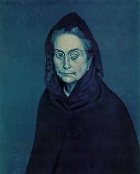
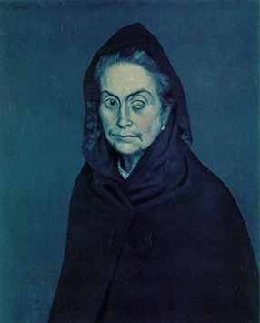
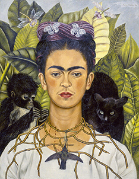
 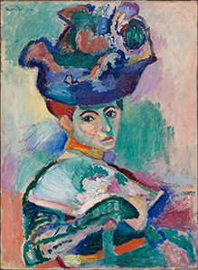
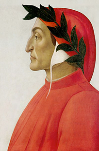
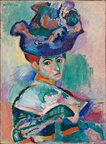
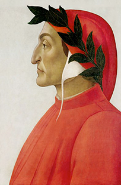
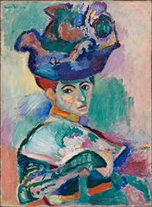
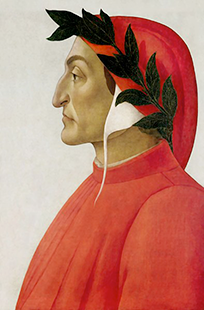
Although portrait paintings, even self portraits have existed as long as art has, the renaissance era saw a revival in them because many rich families commisioned artists to paint pictures of themselves so that they could exist forever and to beautify their houses among other reasons. And since many artists were looking for money they did this no matter what. Take a look a some of these paintings.
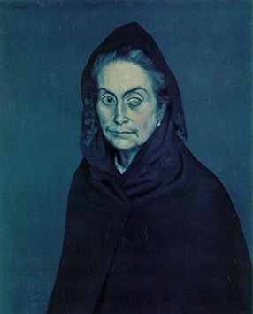
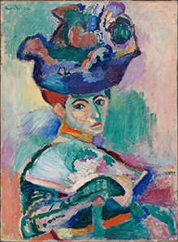
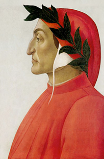
Do you want to have some fun? Check this out: